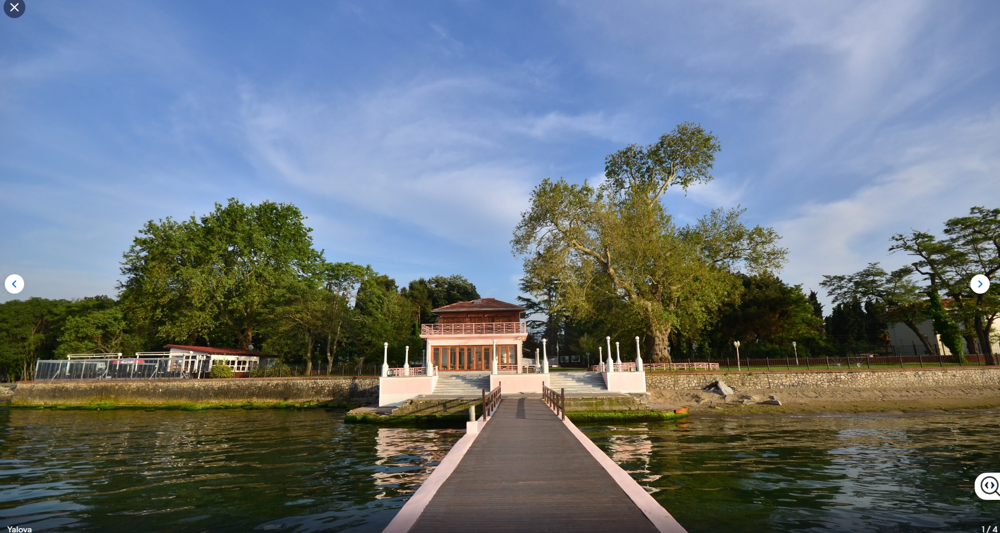

Welcome to the Heart of Turkish Beauty
 Turkey, with its enchanting nature, diverse climate, and ancient history, is considered one of the world’s leading tourism destinations. At the top of this treasure trove stands Istanbul – the country’s first city in terms of tourism, trade, and investment. Beyond its bustling city life, the countryside of Istanbul offers a peaceful retreat, filled with natural wonders and a calm atmosphere. It is the perfect escape for those who seek serenity and wish to immerse themselves in the beauty of unspoiled landscapes. Among these natural gems lies Yalova Province, a tranquil paradise on the eastern coast of the Sea of Marmara in northwestern Turkey. Covering an area of just 798 km², Yalova is the smallest province in the country, with a population of 296,333 (2022). It is bordered by Bursa to the south and Kocaeli to the east. Once part of Kocaeli and later Istanbul, Yalova became its own province in 1995. With its lush greenery, soothing thermal waters, and breathtaking coastal views, Yalova offers a unique combination of relaxation, history, and natural charm – making it a must-visit destination for travelers from around the world.